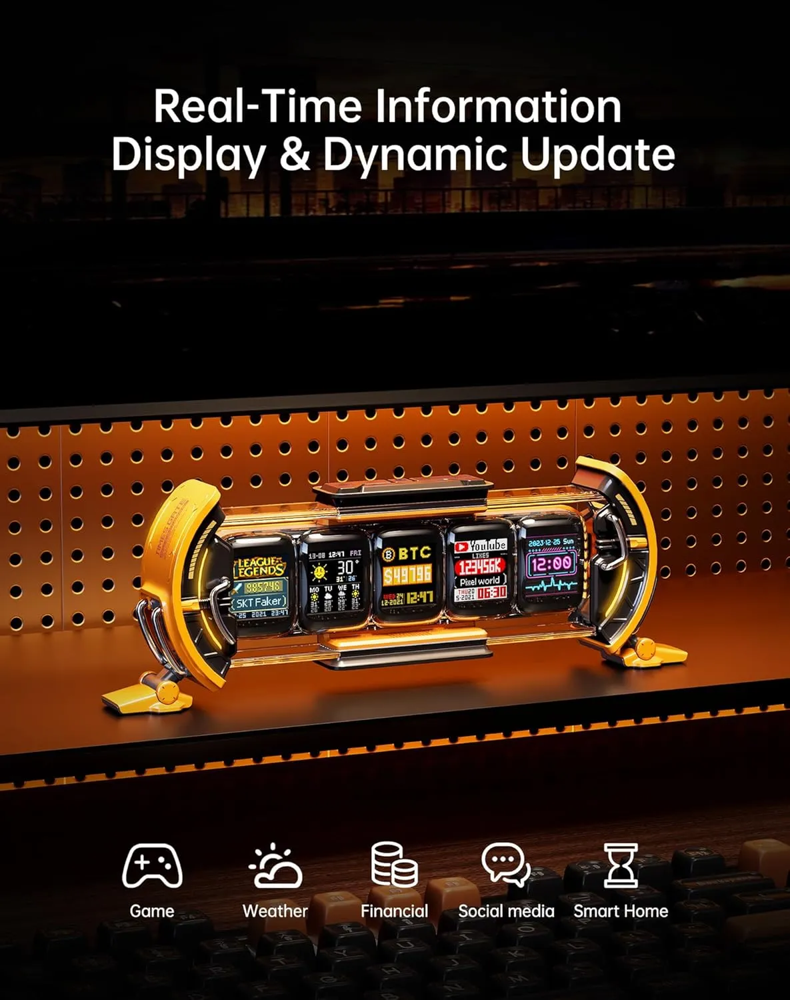

The problem: most desk upgrades disappear in the background
A clean stand, charger, or lamp can make a desk more useful. But most accessories do not create a clear visual identity.
Divoom Times Gate does. It gives the setup five small screens that can show pixel art, animated GIFs, clocks, weather, calendar-style information, follower-style counters, stocks, game stats, and other app-managed data.

Before and after: what actually changes?
Your desk may be organized, but it still looks like a normal monitor, keyboard, and accessories setup.
You get a live focal point with animated pixel panels, smart widgets, and a retro-future look that reads instantly on camera.
Plain desk → cyberpunk desk centerpiece
The strongest reason to buy it is visual: it turns a normal setup into something that looks alive on camera.
A clean desk, but nothing memorable. The setup can still look flat in photos and videos.
Five animated screens create a live pixel dashboard and a clear focal point.

Why it converts: the product is visual proof
This is a strong landing-page product because shoppers understand the value immediately. The screen cluster is the hook, the customization is the reason to stay, and the Amazon button is the next obvious step.
Five-screen signature look
Divoom describes Times Gate as a cyberpunk digital desk clock with five full-color LCD screens and 128 x 128 pixel art support.
Pixel art and GIF personality
It can display pixel art and animated GIFs, making it stronger for setup photos, videos, and creator desks.
Useful dashboard energy
World clocks, weather, holidays, stocks, follower counts, and game stats can turn the display into more than decoration.
Giftable tech object
It feels specific, memorable, and easy to explain: a smart pixel display that makes a desk look more alive.

Know this before you buy
This is not the double portable screen product. Times Gate is a desk display. Divoom says it uses 2.4GHz Wi-Fi, does not use Bluetooth for connection, has no built-in battery, and requires continuous power.
That makes the decision simple: buy it if you want an always-on desk centerpiece. Skip it if you need a battery-powered portable monitor.

- Verify current Amazon price and delivery before publishing.
- Verify available colors and included cable/accessories on the live listing.
- Verify recent review pattern because the Merchant score is a quick editorial pick score, not a live Amazon rating.
Why people add it to their setup
- It makes the desk look alive, not just organized.
- It gives stream backgrounds, gaming setups, and shelves a clear focal point.
- It mixes personality with useful widgets like clocks, weather, stocks, and live counters.
- It is giftable because the value is obvious the moment someone sees it.

Who should consider it, and who should skip it?
Gaming desks, stream backgrounds, creative offices, pixel art fans, tech gifts, shelves, and anyone building a setup that should look better on camera.
People who want a battery-powered gadget, a Bluetooth-only device, a portable monitor, or a purely practical work accessory with no visual value.

What comes in the box?
A clear box-content image helps shoppers understand what they are getting before they click through.

Bottom line: get it if your desk needs a visual upgrade
Divoom Times Gate is not trying to be another silent desk accessory. It is a visual upgrade, a pixel dashboard, and a cyberpunk conversation piece.
If the live Amazon listing matches the price and delivery you want, this is the kind of desk gadget that can make a setup look premium fast.
Quick questions
What is Divoom Times Gate?
It is a cyberpunk-style smart desk display with five full-color LCD screens for pixel art, animated GIFs, clocks, widgets, and live information.
Is it Bluetooth or Wi-Fi?
Divoom says Times Gate uses 2.4GHz Wi-Fi for setup, app control, synchronization, and real-time data display. It is not Bluetooth-connected.
Is it portable?
No. Divoom says it has no built-in battery and requires continuous power, so it is best treated as an always-on desk display.